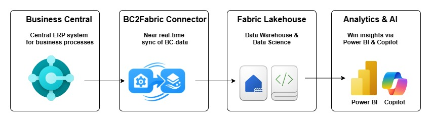

Guides
Architecture
Learn how BC2Fab mirrors Microsoft Business Central data into Microsoft Fabric to deliver governed, analytics-ready datasets for reporting and AI-driven insights.
Solution overview
BC2Fab provides a managed mirroring solution that synchronizes operational data from Microsoft Business Central into the Microsoft Fabric lakehouse. The platform focuses on zero-code connectivity, automated schema handling, and end-to-end observability so finance and operations teams can build Power BI reports or semantic models without managing integration plumbing. The mirroring process captures incremental changes from Business Central APIs, ensuring that the data in the Fabric lakehouse is always up-to-date and reflective of the source system.
Architecture at a glance

Main components
BC2Fab relies on managed components that keep Business Central data synchronized while minimizing operational overhead in Fabric.
- Workload: Installing the BC2Fab workload in a Fabric workspace provisions the mirror, table configuration, and authentication to the Business Central tenant so credentials and schema mappings are managed securely.
- Mirrored database: Data lands in a Fabric mirroring database that automatically aligns table and field names with Business Central. This creates a governed source for semantic models and downstream lakehouses.
- Refresh pipeline: A Fabric pipeline orchestrates loads from Business Central into the mirrored database. A schedule on this pipeline controls the refresh cadence and triggers on-demand runs when needed.
- Business Central app: An app inside Business Central hosts the configuration UI for selecting the relevant API query endpoints (including any custom queries) that BC2Fab should mirror. Once configured, these endpoints are discovered automatically by the Fabric workload.
Runtime model
BC2Fab is metadata-driven in Business Central—query definitions, selected endpoints, and change-tracking fields live in Business Central—but the execution runs fully in Microsoft Fabric where data is mirrored, governed, and made available for analytics.
Data movement pattern
Loads are pull-based: BC2Fab calls Business Central API queries rather than
waiting for pushed changes. Every query includes DataAccessIntent = ReadOnly so traffic targets
the Business Central read-only replica instead of the transactional database. This protects production
performance while still delivering incremental changes to Fabric.